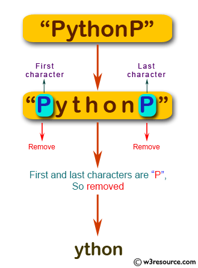

Escriba un programa JavaScript para crear una nueva cadena a partir de una cadena dada, eliminando el primer y último carácter de la cadena si el primer o último carácter es 'P'. Devuelve la cadena original si no se cumple la condición. R:67
Escriba una frase:
Verifica tu cadena
Descripción gráfica del Ejercicio.
